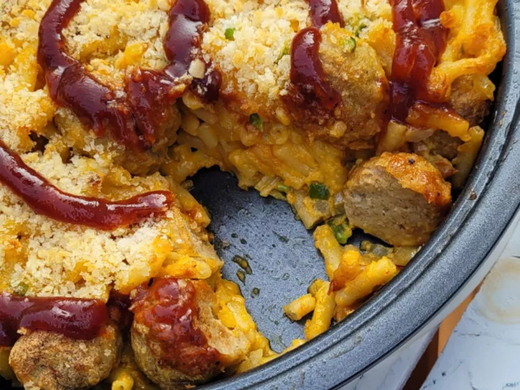

Back
Baked Mac ‘n' Cheese with Chicken Meatballs

Baked Mac ‘n' Cheese with Chicken Meatballs
ingredients
- 6 cups water
- 1 (7.25 ounce) box macaroni and cheese mix (such as KRAFT® Macaroni & Cheese Dinner)
- 1/4 cup milk
- 1/4 cup margarine, cut up
- 1/4 cup margarine, cut up
- 1/3 cup chopped onion
- 1 jalapeno, seeded and chopped
- 1 large egg, lightly beaten
- 1 teaspoon garlic powder
- 1 teaspoon onion powder
- 1 teaspoon paprika
- 1 pound pre-cooked chicken meatballs, thawed
- 1/4 cup panko bread crumbs
- 1/4 cup barbeque sauce, or to taste
Steps
- Bring water to a boil in a saucepan. Add macaroni and cook until tender, 7 to 8 minutes; drain. Stir in margarine, milk, and cheese sauce packet. Set aside to cool slightly.
- Preheat the oven to 400 degrees F (200 degrees C). Grease a 9-inch baking dish.
- Stir together prepared mac and cheese, Cheddar cheese, onions, jalapeno, egg, garlic powder, onion powder, and paprika until well combined. Stir in meatballs. Pour macaroni mixture into the prepared dish. Top with bread crumbs.
- Bake in the preheated oven until golden brown, about 20 minutes. Top with barbeque sauce and serve